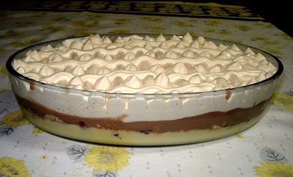

Torta gelada

Essa receita de torta gelada foi feita durante anos na minha familia e resistiu ao teste do
tempo, mesmo com vinte e poucos anos ela ainda continua sendo uma das minhas favoritas, agora
eu irei descrever passo a passo como voce pode refaze-la em casa e provar
toda sua gloria!
Ingredientes
- Leite condensado
- Creme de leite
- Amido de milho
- Achocolato(estamos falando de Nescau aqui)
- Biscoito tipo maizena
- 3 ovos
Utensilios
- Batedeira
- Refratario,forma ou onde quer que voce queira colocar a torta
- Copo americano
- Recipientes para separar os ingredientes
Modo de preparo
- Coque o creme de leite no congelador, precisamos dele gelado(nao congelado)
- Coloque o leite condensado em uma panela, usando a mesma medida da caixinha
de leite condensado voce vai preencher de agua e adicionar duas garfadas de amido de milho.
Misture bem e junte com o leite condensado na panela, misture mais um pouco
- Agora que voce ja adicionou o leite condensado com o amido e agua, separe a claro da gema de tres ovos
e adicione a mistura previa, reserva as claras
- leve o conteudo da panela em fogo medio/alto durante 7 minutos(se voce deixar ferver de mais
o liquido vai criar umas bolinhas duras, nao deixe ferver de mais)
- coloque o liquido dentro de onde voce pretende fazer a montagem da torta e leve a geladeira,
so o suficiente pra preparamos o restante da receita :)
- Com as claras em um recipiente separado, prepare um copo americano quase completamente cheio de acucar
- Comece a bater as claras com a batedeira na velocidade media ou baixa durante 1 minuto e meio
va acrescentando o acucar ao longo de mais 1,5 min. Bata por mais um minuto e pronto, nessa etapa voce
ja deve estar olhando para claras em neve acucaradas.
- agora chegou a hora da calda de nescau e biscoito, coloque cerca de 4 a 6 colheres bem cheias de nescau
em uma vasilha com 3 colheres de cha de agua, se ficar grosso de mais acrescente um pouco a mais de agua
na mesma vasilha. Pegue os biscoitos e despeje na mesma vasilha, quebre eles em duas ou tres partes cada e
misture bem com o chocolate. Cubra a parte de leite condensado com os biscoitos de chocolate.
- Por ultimo, mas nao menos importante, espalhe as claras em neve em cima da cama de biscoitos, condensado
o congelador da sua geladeira esteja com muito gelo, envolva o recipiente com papel filme.
- Espere ate ele ficar durinho e sacie sua glutonaria :)
Inicio